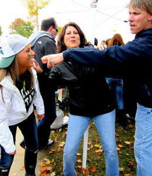
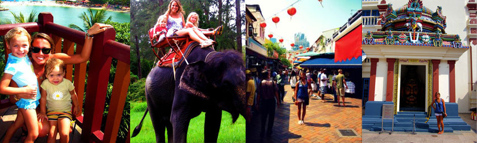

Because I lived to close to MSU, it was always a big part of my life. I knew I wanted to attend MSU for years, so I was definitely excited when I was accepted. I actually love living close to home and having all the connections because I know where everything is. Despite living so close though, I have managed to branch out and have made countless amounts of new friends, which is always hard when everyone from your high school goes here. My favorite part about MSU is fall semester in general. Everyone is so excited to be back, tailgating, football, decent weather- what is there not to love?
I am a very busy person juggling school, work, and a social life1 But overall it has made me a better person and much more prepared for my future. Over these past two years at MSU I have learned so much about myself, and I am excited to continue this journey.
Ever since I was little, my family was always into traveling. We have done road trips across the country, and have gone to Mexico countless times. We have family in Florida and a bunch in Boston, so we also make roadtrips out to see them when we can! We also loved to go camping, and used to plan huge trips every summer back when we had the time.
This past summer, I got to live in Singapore and Thailand for a month, and it has definitely spiked my love for traveling! My dad's cousin and his family (which includes a 5 yr. old, 2.5 yr. old, and 5 month old) were given the opportunity to live across the world when he was put on assignment there for his job. They have been there for 2 years now, and am not sure how much longer they will continue to stay depending on his job. They have had the opportunity to travel all over that side of the world, and when I was with them we spent some time in Thailand. If you ever get the opportuinty to go there, do it- it was unbelievable! I am already trying to plan more international trips (even though the plane ride was kind of torturous!), and hopefully can figure out a way to study abroad.
